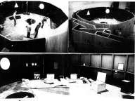

During three years 1978- 1981 the project was intended to the artists of art action, event and the performance. During the project each artist prepared his individual action and it is at the time of the presentation in public that that became a joint creation. One called that " Ambasada Lingua " or " the circle of the coexistence ". All was to stop during the war time in 1981. We continued in clandestinity.
C' est probablement la sublime vision du collectivisme totalitaire qui m' a poussé à construire l' espace circulaire avec un labyrinthe ( pour perdre la direction est- west).
C' était en 1978 à Wroclaw au sud - ouest de la Pologne.
Durant trois ans le projet a été destiné aux artistes de l' art action , " event " et la performance. Pendant le déroulement du projet chaque artiste préparait son action individuelle et c' est au moment de la présentation en public que cela devenait une création en commun. On appelait ça "Ambasada Lingua" ou " Le cercle de la coexistence ". Tout a été arrêter pendant l' état d' urgence en 1981.
| This project was presented in
1984 during the "To Get Close Human Contact" to MAKKOM
Fondation , and during the conference to the institute of the history
of art in Amsterdam
Ce projet a été présenté en 1984 pendant " To Get Close Human Contact " à MAKKOM Fondation, et pendant la conférence à l'institut de l'histoire de l'art à Amsterdam |
"Symbolique space" was a concert - clandestinely organized action /during the emergency state 1981-1983 all artistic creation was prohibited / in a National Theatre of Poznan " Marcinek " as training courses for actors of the theatre in 1982.
"L' espace Symbolique" était un concert - action organisée clandestinement /pendant l' état d' urgence 1981-1983 toute la création a été interdite/ dans un Théâtre National de Poznan "Marcinek" en tant que stages pour des acteurs du théâtre en 1982.
Andrzej Bieżan , Krzysztof Knittel - musique - action
Ryszard Piegza installation - action

L' espace Symbolique 1982


Installations Symétriques 1988 Paris
 CREDAC 1997 Ivry
sur Seine
CREDAC 1997 Ivry
sur Seine
Nous sommes en train de conquérir le nouveau territoire et cela demande l' invention d' un nouveau comportement.
L' individu monte en puissance.


 Piotrkow Trybunalski Poland
Piotrkow Trybunalski Poland Soyons conscient encore une fois que l'art n'est pas une production des valeurs du futur mais l'exploration des sources d'énergie vitales!

 piegza 99
piegza 99
terrain piégé/permanent-action/
La non-ratification des Etats-Unis, de la Chine et de la Russie de la convention interdisant les mines antipersonnel !!!